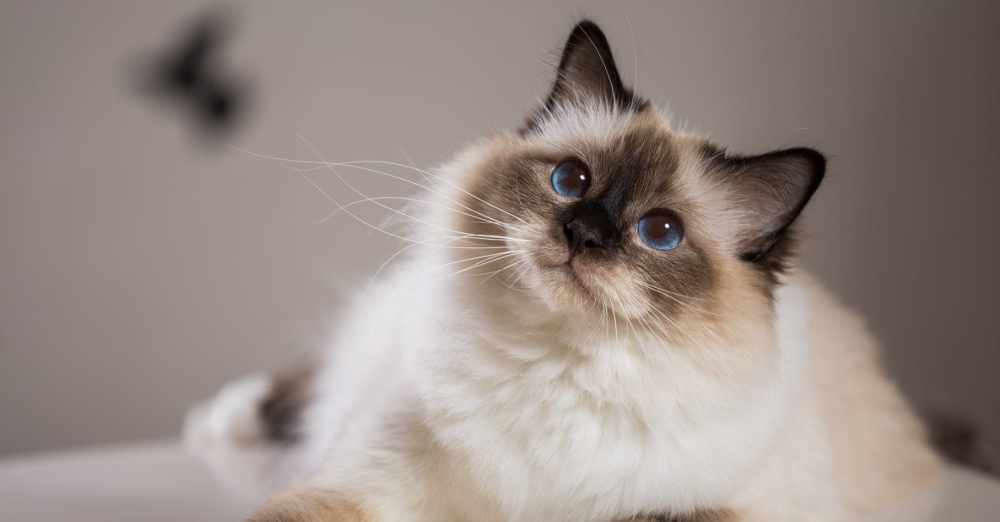

Breeds Of Cats
York Chocolate:-

The York Chocolate (or simply York) was an uncommon American breed of show cat, with a long, fluffy coat and a tapered tail and most of them were mostly or entirely chocolate-brown or the dilute form of brown, known as lavender. The breed was named after New York state, where it was established in 1983. This breed was created by color-selecting domestic long-haired cats of mixed ancestry. The breed was not widely recognized by cat registries. It was not recognized by the major organizations such as The International Cat Association (TICA), the Cat Fanciers' Association (CFA – North America) or Fédération Internationale Féline (FIFe - Europe). By 2015 there was only one listed breeder of York Chocolates (Debbie Reber). By 2016 no registry carried its breed standard, there were no breeder websites and the breed is considered extinct. Although similar looking random-bred cats can be found today, without pedigree papers these are not York Chocolate cats.
Sphynx:-

"Sphynx" redirects here. For the legendary creature, see Sphinx. For other uses, see Sphynx (disambiguation). The Sphynx cat, or simply Sphynx, is a breed of cat known for its lack of fur. Hairlessness in cats is a naturally occurring genetic mutation, and the Sphynx was developed through selective breeding of these animals, starting in the 1960s. According to breed standards, the skin should have the texture of chamois leather, as it has fine hairs, or the cat may be completely hairless. Whiskers may be present, either whole or broken, or may be totally absent. The cats have a narrow, long head and webbed feet. Their skin is the color that their fur would be, and all the usual cat markings (solid, point, van, tabby, tortie, etc.) may be found on the Sphynx cat's skin. Because they have no fur, Sphynx cats lose body heat more readily than coated cats, making them both warm to the touch and prone to seeking out warm places.
Birman:-
The Birman, also called the "Sacred Cat of Burma",[1] is a domestic cat breed. The Birman is a long-haired, colour-pointed cat distinguished by a silky coat, deep blue eyes, and contrasting white "gloves" on each paw.The breed name is derived from Birmanie, the French form of Burma. The Birman breed was first recognized in France by the Cat Club de France in 1925, then in England by the Governing Council of the Cat Fancy (GCCF) in 1966 and in United States by the Cat Fanciers' Association (CFA) in 1967. It is also recognized by the Canadian Cat Association (CCA) and the International Cat Association (TICA) in 1979. No clear record of the breed's origin exists. They are most often claimed to have originated as the companions of temple priests in northern Burma in the Mount of Lugh. Many stories exist of how the cats first came to France, including pairs of cats being given as a reward for helping defend a temple, or being smuggled out of Burma by a Vanderbilt. Another pair of Birmans (or a pregnant female called Poupée de Maldapour) were said to have been stolen and later imported to France by Thadde Haddisch.The first traces of historical Birmans go back to a Mme Leotardi in Nice, France.